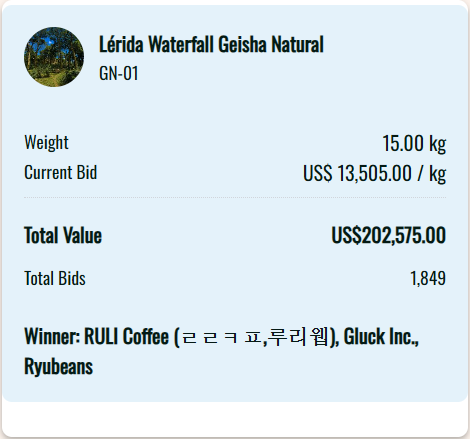
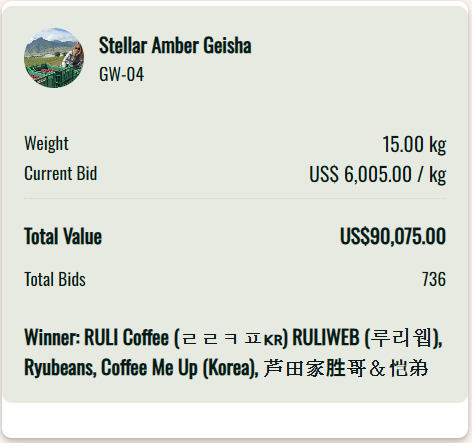
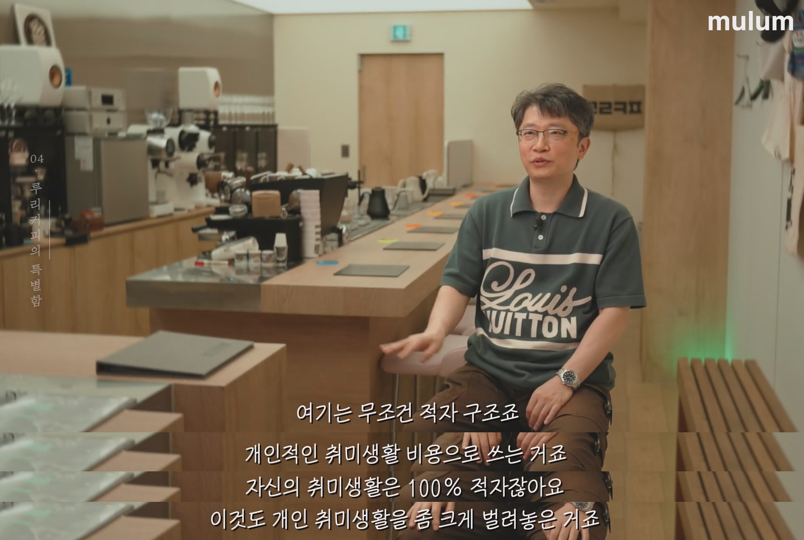
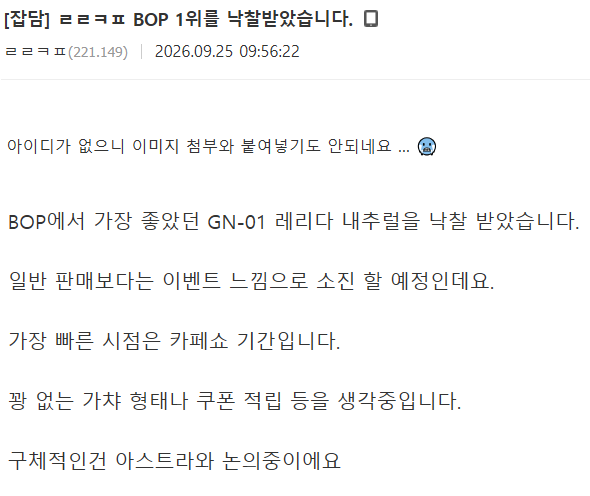
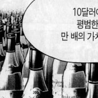
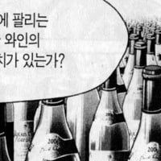

베스트 오브 파나마 (파나마 최고 커피를 뽑는 대회)
내추럴 1위 수상커피 낙찰받아옴
가격은 키로당 13505달러. 현재환율로 약 1830만원

워시드 4위도 받아옴
키로당 6005달러 약 814만원

맛이 졸라 궁금하지만 지갑이 감당 불가능해서 아쉽다

근첩대장이 디시에 글을 남기는 진기한 모습

베스트 오브 파나마 (파나마 최고 커피를 뽑는 대회)
내추럴 1위 수상커피 낙찰받아옴
가격은 키로당 13505달러. 현재환율로 약 1830만원

워시드 4위도 받아옴
키로당 6005달러 약 814만원

맛이 졸라 궁금하지만 지갑이 감당 불가능해서 아쉽다

근첩대장이 디시에 글을 남기는 진기한 모습
홈바클에도 썼던대
솔직히 동네방네 돌아다니면서 자랑할만함ㅋㅋㅋ
대충 몇배가 어쩌구콘
올리버좌


올해 1위는 전년도 보다 많이 싸네 작년 3관왕찍고 가격 미쳐 날뛰더니만
https://www.dogdrip.net/723560506
커대신 버튜버가 내려주는 게이샤 아메리카노를 드리겠습니다
저기 커피 그냥 받는게 아니라 모에모에큥 해야 한다며 ㅋㅋ
저런거 파는 파트는 멀쩡한 고급 카페임ㅋㅋ
아니 쉬벌 카페쇼에서 소비한다구요????
와 얼마나 할까 한잔에
근전사 ㄷㄷㄷ
왠일로 본진에다가도 글씀 ㅋㅋ
근전사 대우 ㅋㅋ
근데 진짜로 저런 원두로 내린 커피는 맛이 다름??? 향이 다르다고 표현하는게 맞을까? 암튼 다름?????? 어떤 차이가 있는지 궁금하다ㅋㅋㅋ
어느정도 선 까지는 비싼게 진짜 비싼값을 하는데 그 이상부턴 감각 예민한 사람이나 느낄 수 있는 부분이라 잘 모르면 돈아까움.
그리고 그게 사람마다 선이 달라서 마셔가면서 알아봐야함.
본글 근근커피? 처럼 저렇게 까지 비싼 원두로 만드는 커피는 잘모르는사람이 먹어도 비싼값을 하고 감각이 예민한 사람이라면 특수하게 느낄 만큼 뭔가 다르긴 다르다는 거네 ㅋㅋㅋ


비싼 원두는 누가 먹어도 싼것보단 훨씬 특별하게 느낄순 있겠지만 2천원짜리 싸구려 마시던 사람이 5천원짜리 마시는거랑 저런 대회원두 먹는거랑 차이 못느낄수도 있음.
그리고 취향이라는게 있어서 비싼거보다 오히려 싼게 더 입맛에 맞는 사람도 있고.
흑흑.. 시발 나는 차이를 못느낄 가능성이 높은 사람이구나... 쫌 슬프다.. 일단 저런고오오오오급 커피들은 산미가 많이 도드라지나? 추출방식에 따라 다른가?
추출방식이랑 로스팅 정도에 따라 다르지만 저런 비싼 원두들은 향을 많이 남기려고 약하게 볶는게 많아서 산미는 좀 있을거임.
아... 커잘알 많네! 아주 도움이 많이 되는 댓글들이야.. 비싼 돈 들이지 않아도 간접적으로 상상이 가능하게 도와준다 ㅋㅋㅋㅋㅋ
동네에서 드립커피를 파는데를 찾고
이름이 긴 커피를 파는데를 가보면 됨
에티오피아(x)
에티오피아 게뎁 할로베리티 워시드 (이렇게파는델 가봐야함)
맨날 저가커피점에서 아아만 때려부으니까 궁금하긴 한데... 저런이름긴 커피원두파는데가 주변에 없으... 커피한잔 먹자고 몇시간씩 이동해야되는것도 에바같고 ㅋㅋㅋㅋㅋㄹㅇ 순수한 궁금증인데 해소하기가 쉽지않넼ㅋㅋㅋㅋㅋ
네이버지도 켜고 평소에 다니는 위치에서 드립커피나 로스터리로 검색하면 이딴위치에서 커피를 판다고? 싶은데에 하나쯤은 있을걸ㅋㅋㅋ 한번 찾아봐
대개 요상한 위치에 쳐박혀있어서 평소 돌아다니면서는 안보임
자가배전이나 로스터리 카페로 검색하면 동네에 생각보다 많이 보일꺼임.. 우리나라 카페시장이 이미 포화상태라 진짜 사방에 카페가 널려있어서...
BOP나 CoE 같은 옥션랏들은 아무래도 심사위원들 취향이 들어간거라지만, 시중에 유통되는거랑은 꽤 차이가 있음 좀 더 깔끔하고 산뜻한 느낌
깔끔 산뜻이면 아무래도 산미가 적절히 가미되있을 확률이 높겠구나.. 일반적으로 생각하는 커피가 아니라 tea에 가까운 느낌이려나...
원두, 가공법, 볶는 정도마다 다른데 대체로 저 정도 고가 커피들은 히비스커스, 엘더플라워 뭐 이런 느낌을 선호하는것 같음. 잔에 5000 - 8000원대 핸드드립 산지별로 한잔씩 사마시다보면 취향 찾아질거여 굿
고마워요 커잘알! 일단 핸드드립부터 도전해보께..
보통 좀 멀지만 전남 고흥에 가면
우리나라에서 재배한 커피콩으로 원두를 볶아주는데가 있음.
여기도 약간 산미가 있다고함
근전사
이거임? 로리웹 인데 자랑할곳이 없으니깜 디씨에 가서 글쓴다는거?
20g기준 원두 값만 36만원 나오네 ㄷㄷ
소장을 불러라...
몸이 약빨 잘받는 체질이라 카페인 때문에 커피 잘 안먹는데
주변사람들이 거의 다 커피먹으니까 한번 먹어볼까 하는데 입문을 뭘로 해야 좋을까?
메가커피가 농도도 낮고 스타일이 구수한 스타일이라 시작점으론 괜찮을거같음. GS25 아메리카노도 비슷한계열이니 이쪽으로 가보는것도 괜찮을수도
카페인 민감하면 디카페인쪽은 모 유튜버가 줄세우기 한거 보니 빠바/우지커피/폴바셋/던킨 을 탑4로 꼽았는데 우지커피 주변에 있으면 한번 먹어보는것도 괜찮을거같음(난 안먹어보긴 했음)
4300원내고 빠바에서 커피사먹긴 쫌...먼가먼가임
메가가 매장도 많고 하니 메가에서 아메한잔 마셔보고 괜찮은거같은데 잠이안오면 메가에서 디카페인 마셔보는것도 괜찮을듯
개드립에 커잘알들 많아서 좋네 여간 나중에 가봐야지
참고로 저 ㄹㄹㅋㅍ는 비싼 원두 가져와서 중강배전으로 싸게 팔아주기도 함
예를 들자면 돌돔으로 매운탕 해주는 거라든가 포르쉐 911 사서 정속, 안전운전 하는 느낌
이번건 좀 싸네 그래도